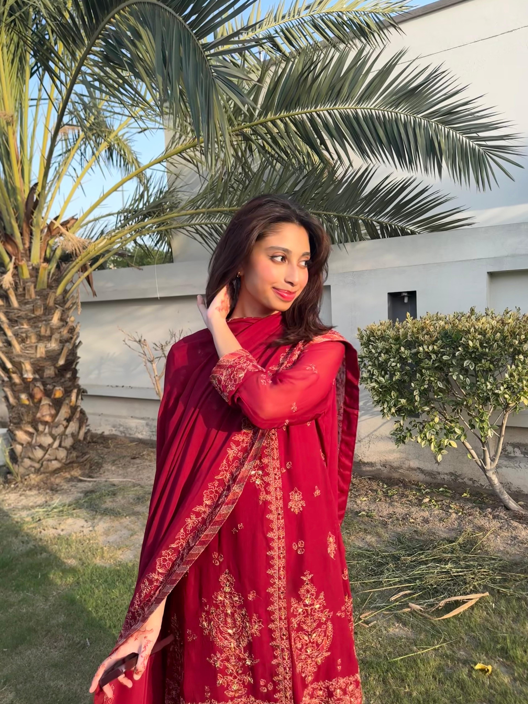
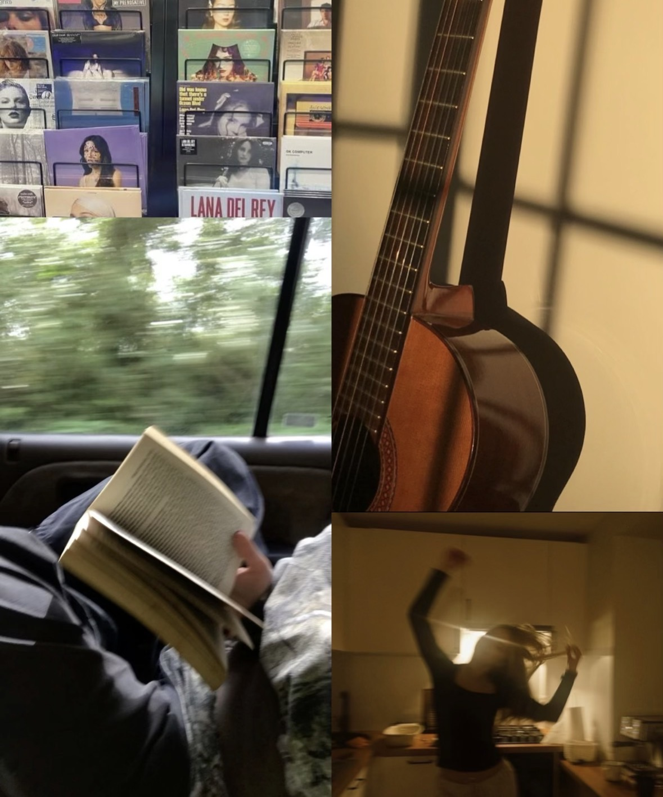

Getting things done quickly is my preferred way of going through life.
People often tell me that I get things done pretty fast, and I think thats because I dont like having things hanging over my head. My name is Zainab Raheem, Im from Pakistan, and Im currently studying ICT at HZ University of Applied Sciences. I also have a little prior experience with programming, which I hope to build on during my studies.
My Interests
- I really enjoy dancing and it is one of the things I like doing in my free time.
- I enjoy singing and listening to music.
- I am learning to play the guitar and want to keep improving.
- I enjoy reading, especially when I find a book that really interests me.
- I enjoy keeping up with music, shows, movies and other things in pop culture.

